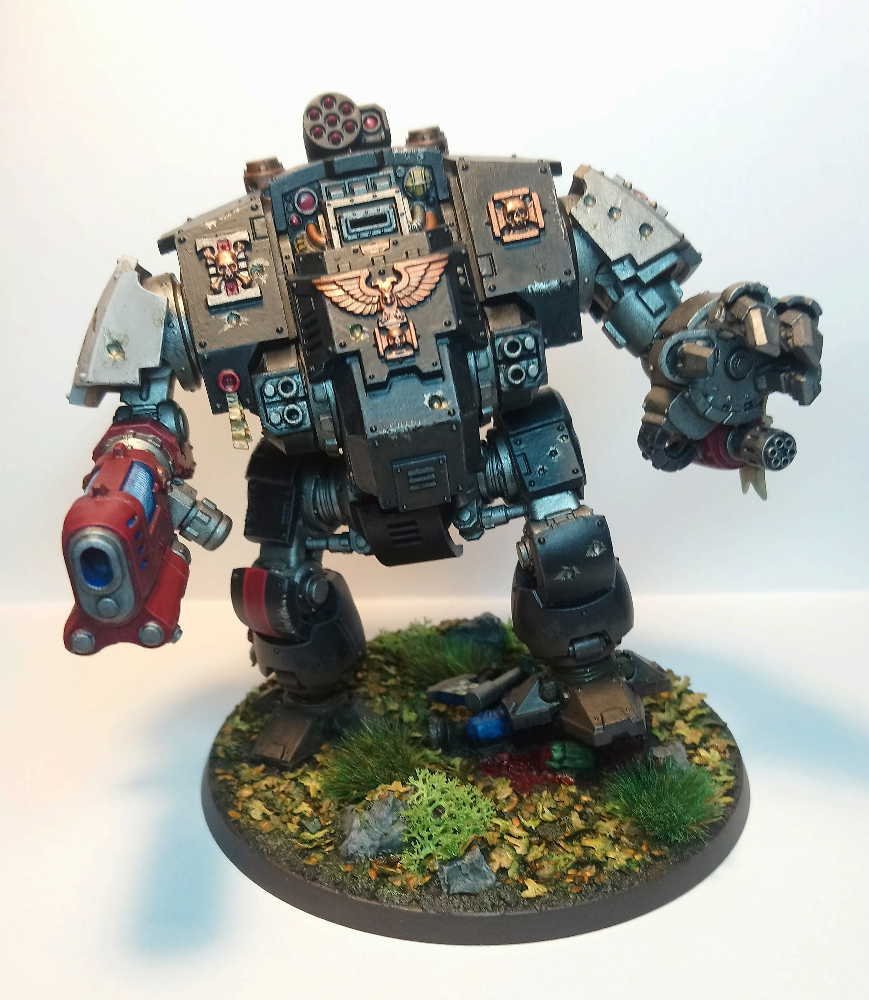

On this page I will show you some of my Warhammer 40k models and give a few tips to how I achieved certain colours for those interested in painting miniatures themselves!
This is the right side of my Dreadnought model, note the free hand work on the right armour pauldrin. If anyone wanted to know, the chapter I chose for my dreadnought is that of the Storm Reapers!

This is my Redemptor Dreadnought, I am very proud of this model, as it is probably the biggest model I have painted so far in my hobbying career! From a painting perspective, black is a very hard colour to pull off. But the method
I use is very simple. I first spray my models with chaos black, then I paint all the black areas with abaddon black, as the they vary in colour. After I would put a layer of nuln oil, black shade and make sure to use a brush to
absorb any excess shade that could pool in areas. Lastly, I would finish the black with a simple grey hightlight on all its edges using eshin grey.
This is the left side of my dreadnought, as you can see I have used a lot of metal on this side. But to bring your attention to the detial on the parchment scroll attached to his arm. To get the old, battered look of a worn and stained
parchment comes done to the shading and hightlighting. Firslty I used a light brown/dust colour called zandri dust. After that a shade of a reddish/brown, seraphim sepia and then the hightlight was achieved by dry brushing tyrant
skull. After this was all done, I worked on the details written on the scroll. This was achieved by making a custom mix of black and the reddish/brown shade i used on the scroll itself.